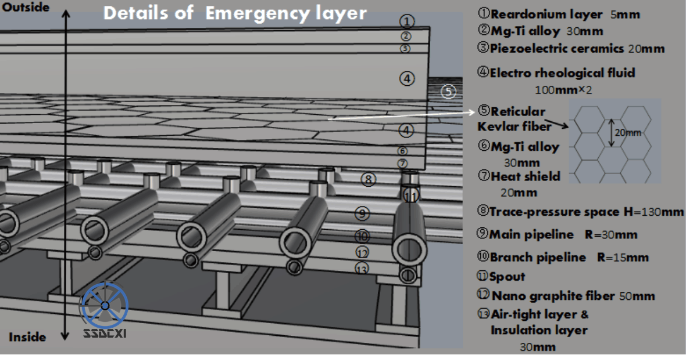

SSDCXI
蔡景昊译
概览
Spring 2016 - Spring 2018
如果只能选择一件事，来作为我的高中生涯的标致性事件，那么此事再合适不过。
高二那年，我在高中校园里建立了SSDCXI，即厦门一中太空城市设计社，我们参加了NASA主办的 “国际太空城市设计大赛”
建社之初，除了一腔热血之外我一无所有，但在我的经营引导和历届社员们的不懈努力下，我们社团三次在中国初赛中赢得了一等奖，摘得一枚中国赛区的金牌，在印度新德里的半决赛中两次获得亚军。除此之外，我们还获得了两枚爱德华·迪克杰出团队领导奖。
来看看我们的故事吧：
 |
 |
 |
 |
 |
|
 |
{kind=link}
{kind=link}
{kind=link}
章节一：社团创立
2016年春天，在选拔了12名社员之后，我建立了这个社团。我们志同道合，目标一致，那就是设计一座太空城市。然而万事开头难，没有人清楚到底该做些什么，情况颇为棘手。
竞赛要求我们团队设计一个环绕水星的太空城市。总的来说，我们需要完成一份40页的投标方案，其中包括了一系列的3D设计图，用以展示城市的外部结构（材料、尺寸等）、内部规划（交通、住宅等）、日常运营（食物、供水等）、自动化（应急预案、工业机器人等）。
作为社团创始人，我的职责是带领团队从零出发，实现从无到有
{kind=link}
Us | 第一届社员在厦门高崎机场
章节二：越挫越勇
作为初来乍到的高一学生， 我没有任何带领工业设计团队的经验，所以我选择了相信我的直觉。我邀请了厦门本地大学的教授为社团授课，以此锻炼成员3D建模的能力。为了让成员知悉设计理念和内容，我通读了多份太空城市设计方案，并且每周进行物理知识和设计的讲解。
两个月的准备后，我们收到了第一份RFP（设计要求书），要求我们设计一座朝向太阳的太空城，环绕于水星的极地轨道。为了更好地达到目标，我规划了每周迭代一次的设计推进方式，将团队分作多个不同的小组解决具体的任务。每迭代一次，我都能及时地向组员们做出反馈。最后，我们对同一个系统给出了多个版本的设计，并且越来越完善。
{kind=link}
{kind=link}
{kind=link}
有时，我要与队员们一起反复对设计方案进行修订。比如说为了让太空城市更适应水星表面的极端环境，我们将城市的外部构造修改了至少11次。我鼓励成员们进行一场场的头脑风暴，常常一个下午过去，黑板上已写得满满当当。
在辛勤工作了四个月之后，我们成功了：一份独立设计的纯英文太空城市方案书，长达70页。
值得一提的是，我们所在的学校是一所中国公立高中，早上7:15上课，直到晚间9:45才放学。所以，我非常感谢我的社员们，在应对沉重学业负担的同时和我一起完成了这几乎是不可能的任务。尽管压力很大，但和你们一起奋斗是我一生中最美好的经历之一。谢谢你们！
|  | |
| Outer Structure V1.0 | Outer Structure V2.0 |
{kind=link}
{kind=link}
章节三：开创先例
八月，我们提交了方案书。那时我以为此行已经告终了。我的意思是，作为第一次参赛的毫无经验的队伍，完成了方案书本身就已是一个创举，获得奖项更是从未想过。
我不会想到，我认为的终点，不过是踏出了第一步，未来意义非凡的两年旅程的第一步。
没错，你可能已经猜到了，我们在淘汰赛中赢得了一等奖，成为了福建省第一支进入到全国赛的队伍。在中国的决赛中，我被选为总裁，领导一家48名学生组成的模拟航空航天技术公司“Vulture”，公司的目标同样是设计一座全新的太空城市。但这次我们只有24小时的时间，并且团队中有36位完全陌生的成员。我不断在各个部门进行协调，在24小时内带领团队设计了一座水星地下的太空城市。但遗憾的是，我们公司只获得了亚军，我们所代表的学校无法晋级亚洲赛区的半决赛。
然而，就此放弃从来不是我们的风格。在得知有复活赛机会后，我们毫不犹豫地参加了，在短短一个月的期限里，我们反复地进行设计，不断完善原有的设计方案。那可以说是我高中生涯最黑暗的时期，我的ACT考试（美国高考）、高中五个科目的期中考试日期与设计稿提交的最后期限相隔不到十天，但是，我们做到了，我们成功了，又一次。
如你所料，我们也成为了本省第一支踏入印度新德里的世界半决赛的队伍， 在印度赛里，我成为了5家模拟公司中唯一的中国总裁。这一次，我要带领的是公司是由54名来自三个不同国家的学生组成的。
| Automation | Human Factor | Structure |
{kind=link}
{kind=link}
{kind=link}
章节四：成长
胜败乃兵家常事，难的是从胜负之中汲取经验，并以此让我们的SSDCXI茁壮成长起来。在印度比赛之后，我又着手将社团规模由12人扩展到了40人，以下是我为社团发展所做的一系列措施：
网页设计
我们是一个科技类社团，自然需要一个社团网站，如果酷炫一点就更好了。问题是社团里没有人接触过网页设计的相关知识，所以只能从头自学了。通过一个夏天的努力，我设计了人生中第一个网页： ssdcxi.space
此网站旨在向潜在的未来成员介绍本社团，同时记录社团历史。现在由我的继任者负责维护。
| ssdcxi.space |
视频编辑
仅仅通过一张海报来展示我们做的事情是不可能的（虽然我们设计了很多张海报），所以我想为社团制作一个宣传视频，以此吸引新的成员。同样的困难再次出现，在这方面我们同样是毫无经验，自然而然地，我们只能走一步学一步。我的伙伴们帮我录制了脚本，之后我用两天完成剪辑。话说在前，这个视频的制作者只是初试牛刀，所以也许这不是你所见到的最精彩的宣传视频。以下是完整视频：
拉取赞助
在参赛过程中，我们要飞往北京和印度，因此需要赞助商来为我们提供经费。作为社长，我必须确保我们得到赞助。由于我们的高中并没有赞助此类校外赛事的先例，我们与学校的相关人员不断商议(特别感谢焕炎老师！！)，成功劝说他们补贴了部分经费。我又一次次穿过大半个厦门去与启德教育集团（EIC）协商，并达成了合作。最后，学校支付了我们的食宿开销，EIC赞助了我们的机票费，我们社团节省了大约三万元人民币。
活动策划
在社团建立的第二年，我想让更多人体验加入工业设计团队的乐趣，所以在2018年的冬天，我们举办了厦门高中生太空城市研发者大会（XYSSDC），一个持续五天的冬令营，接纳60位来自全省各地的高中生，为他们进行太空城市设计的培训。这个活动值得我们用单独的页面来展示。点击此处了解：（敬请期待）